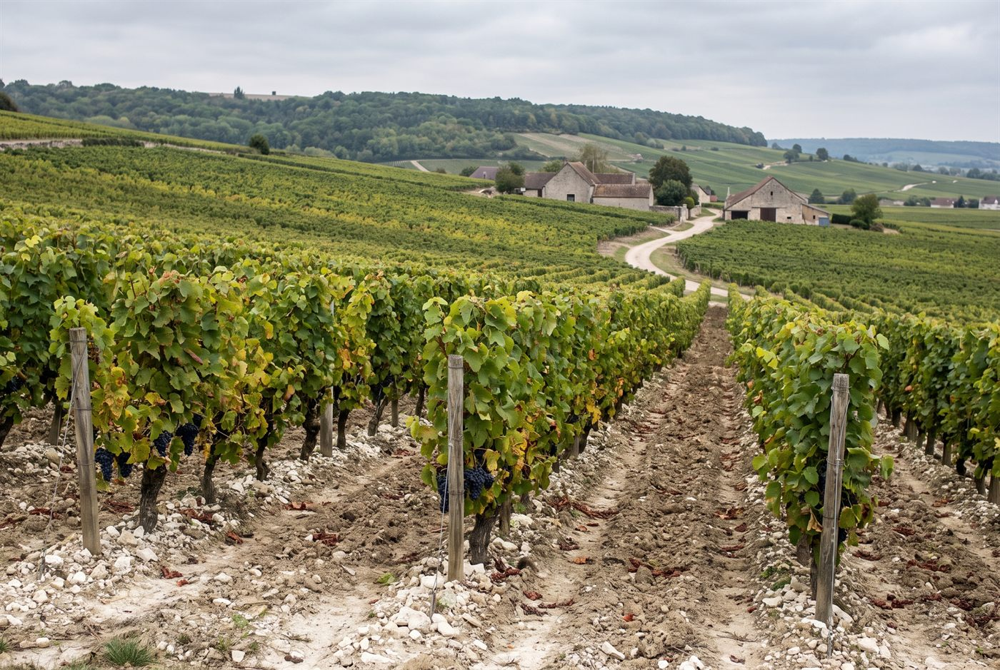

Les domaines · Champagne · Bouzy
Bouzy, Montagne de Reims · Champagne
Domaine Georges Rémy
Pinots noirs de Bouzy vinifiés parcelle par parcelle, très peu dosés.

Ambiance de Bouzy
Installé à Bouzy, village grand cru de la Montagne de Reims, Georges Rémy a rejoint le domaine familial en 2000 et a signé ses premières cuvées de champagne en 2014, après des vins tranquilles dès 2011. Ses 5,3 hectares, répartis entre Bouzy, Ambonnay, Louvois et Tauxières, sont labourés depuis 2012 et certifiés en agriculture biologique depuis 2018. Chaque parcelle est vinifiée séparément, souvent sous bois, avec un dosage minimal, ce qui donne des champagnes de garde à dominante pinot noir.
Effervescents
Pinot noirParcelle de Bouzy en pinot noir pur, cuvée millésimée taillée pour la garde.
Pinot noir, ChardonnayAssemblage millésimé à parts égales de pinot noir et de chardonnay.
Pinot noirPinot noir de Bouzy, millésimé.
Pinot noirRosé d'assemblage en pur pinot noir de Bouzy, cuvée numérotée non millésimée.
Pinot noirRosé de macération en pur pinot noir de Bouzy, millésimé.
ChardonnayBlanc de blancs issu d'une parcelle de Tauxières, millésimé.
Pinot noir, ChardonnayAssemblage des parcelles des quatre villages du domaine, à forte dominante pinot noir, cuvée numérotée.
Rouges
Pinot noirBouzy rouge, vin tranquille de pinot noir, millésimé.
Pinot noirBouzy rouge issu d'une parcelle unique, millésimé.
Ces cuvées vous parlent ?
Demander les disponibilités